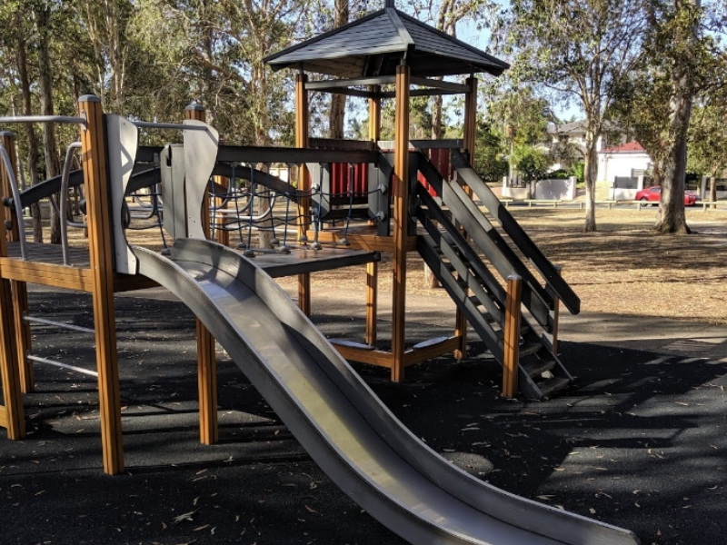

Looking to entertain the kids? Looking for a workout?
Come explore the trail surrounding the lake and dive into
the woods to find not only wildlife and scenery, but also
multiple parks as well as exercise equipment.
Come get your daily dose of exercise to keep yourself fit
and healthy while the kids are entertained at the parks.
There are multiple parks shrouded amongst the woods and
surrounding the lake so if you are bored of one, you can
explore another!
There is nothing not to love about taking a stroll through
the quiet forests or around the lake appreciating the lake
and its habitants whilst getting your quick fix of work out.